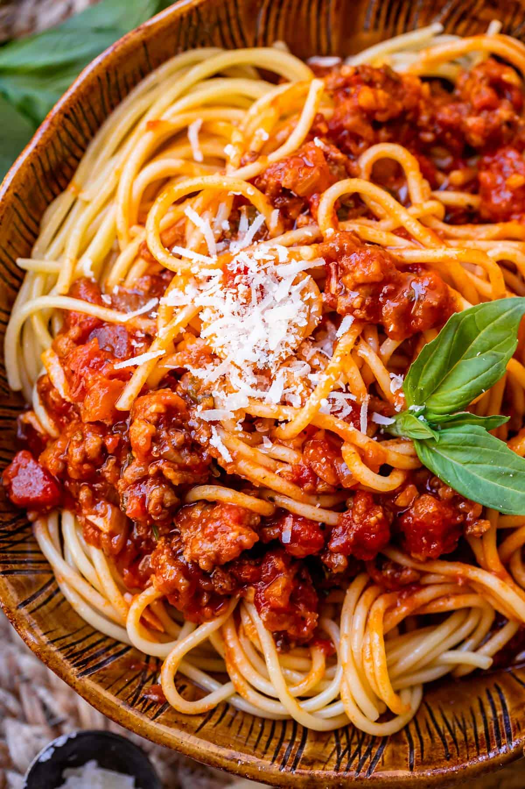
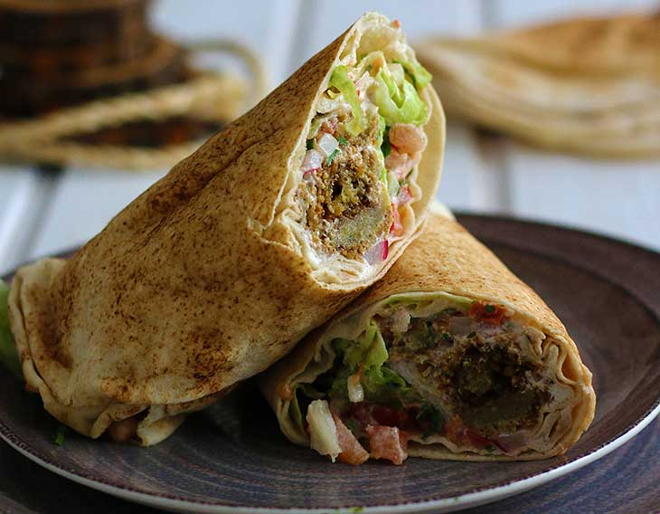
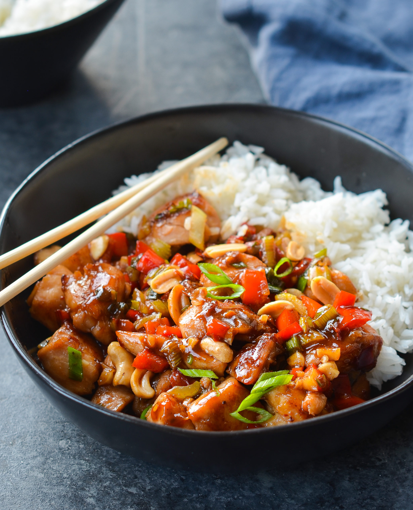
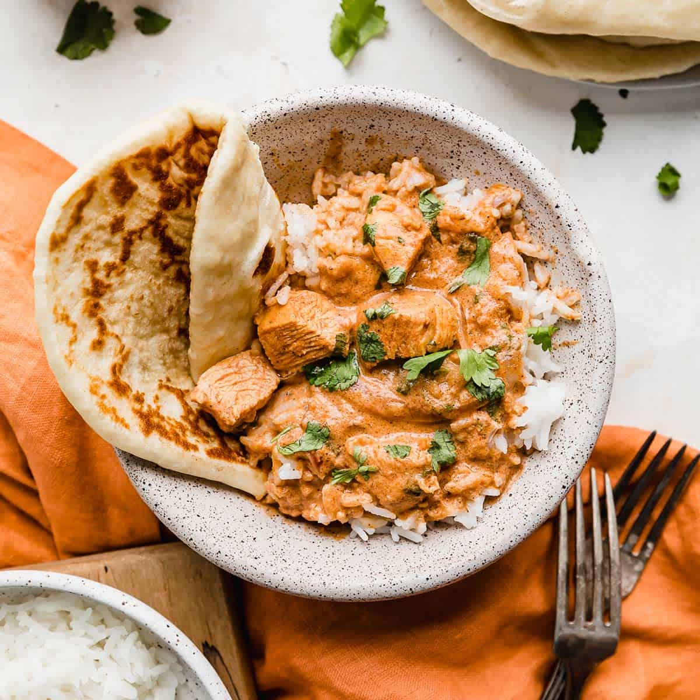

My Recipes
Add New Recipe

Spaghetti and Meatballs
40 min
Ingredients
- 1 lb ground beef
- 1/2 cup breadcrumbs
- 1/4 cup milk
- 1/4 cup Parmesan cheese
- 2 tbsp parsley, chopped
- 1 egg
- 1 tsp salt
- 1/2 tsp garlic powder
- 1/2 tsp onion powder
- 1/4 tsp black pepper
- 2 tbsp olive oil
- 8 oz spaghetti
- 24 oz pasta sauce
- Additional Parmesan cheese and parsley for garnish (optional)
Instructions
- In a large mixing bowl, combine 1 pound of ground beef, 1/2 cup of bread crumbs, 1/4 cup of milk, 1/4 cup of grated Parmesan cheese, 2 tablespoons of chopped parsley, 1 egg, 1 teaspoon of salt, 1/2 teaspoon of garlic powder, 1/2 teaspoon of onion powder, and 1/4 teaspoon of black pepper. Mix until all ingredients are evenly combined. Shape the mixture into 1 1/2-inch meatballs.
- In a large skillet, heat 2 tablespoons of olive oil over medium heat. Add the meatballs in batches, ensuring not to overcrowd the skillet. Cook until they are browned on all sides, which should take about 5 minutes. Transfer the browned meatballs to a plate.
- Bring a large pot of water to a boil and lightly salt it. Cook 8 ounces of spaghetti in the boiling water, stirring occasionally, until it is tender yet still firm to the bite. This usually takes about 12 minutes. Drain the cooked spaghetti.
- Return the skillet to the heat and pour in 24 ounces of pasta sauce. Bring it to a simmer. Add the browned meatballs back into the skillet and simmer until they are cooked through, which should take about 10 minutes.
- To serve, place the cooked spaghetti on plates and top it with the meatballs and sauce. Garnish with additional grated Parmesan cheese and chopped parsley if desired.

Falafel Wrap
50 min
Ingredients
- 1 cup dried chickpeas
- 1/2 large onion, roughly chopped
- 2 cloves garlic
- 3 tablespoons fresh parsley, chopped
- 1 teaspoon coriander
- 1 teaspoon cumin
- 1 teaspoon salt
- 1/4 teaspoon black pepper
- 1/4 teaspoon cayenne pepper
- Pinch of ground cardamom (optional)
- Vegetable oil for frying
- 4 pita bread rounds
- Tahini sauce, lettuce, tomatoes, and cucumbers for serving
Instructions
- In a food processor, combine 1 cup dried chickpeas, 1/2 large onion (roughly chopped), 2 cloves garlic, 3 tablespoons fresh parsley, 1 teaspoon coriander, 1 teaspoon cumin, 1 teaspoon salt, 1/4 teaspoon black pepper, 1/4 teaspoon cayenne pepper, and a pinch of ground cardamom (optional). Pulse the mixture until it's finely chopped but not pureed.
- Transfer the mixture to a bowl and add water if needed to make it hold together. Form the mixture into 1-inch balls and flatten them slightly to make patties.
- In a skillet, heat vegetable oil over medium-high heat. Fry the falafel patties in the hot oil until they're browned on both sides, which should take about 3-4 minutes per side. Transfer them to a paper towel-lined plate to remove excess oil.
- Warm 4 pita bread rounds in the oven or on a stovetop griddle until they're soft and pliable.
- To assemble the falafel wraps, spread a spoonful of tahini sauce on each pita bread round. Add lettuce, tomatoes, cucumbers, and 4-5 falafel patties to each wrap. Drizzle with more tahini sauce if desired.
- Fold the sides of each pita over the filling and roll it up tightly. Serve your homemade falafel wraps immediately.

Kung Pao Chicken
30 min
Ingredients
- 1 lb boneless, skinless chicken breasts, diced into 1-inch pieces
- 1/2 cup unsalted dry-roasted peanuts
- 2 tablespoons vegetable oil
- 3 cloves garlic, minced
- 1 teaspoon fresh ginger, minced
- 3-4 dried red chili peppers (adjust to your spice preference)
- 1/2 cup diced red bell pepper
- 1/2 cup diced green bell pepper
- 1/2 cup diced onion
- 2 tablespoons soy sauce
- 1 tablespoon rice vinegar
- 1 tablespoon hoisin sauce
- 1 teaspoon sugar
- 1/2 teaspoon cornstarch (for sauce thickening)
- Sesame seeds and green onions for garnish (optional)
Instructions
- In a bowl, mix together 1 lb diced chicken pieces, 2 tablespoons soy sauce, 1 tablespoon rice vinegar, 1 tablespoon hoisin sauce, 1 teaspoon sugar, and 1/2 teaspoon cornstarch. Let the chicken marinate for about 10 minutes.
- Heat 2 tablespoons of vegetable oil in a large skillet over high heat. Add the marinated chicken and stir-fry until it's browned and cooked through, which should take about 5-6 minutes. Transfer the chicken to a plate.
- In the same skillet, add dried red chili peppers (3-4) and stir-fry for about 30 seconds until they become fragrant. Be cautious as the peppers can be spicy.
- Add the minced garlic (3 cloves) and minced fresh ginger (1 teaspoon) to the skillet. Stir-fry for another 30 seconds until aromatic.
- Add diced red bell pepper (1/2 cup), diced green bell pepper (1/2 cup), and diced onion (1/2 cup) to the skillet. Stir-fry for 2-3 minutes until the vegetables are slightly tender.
- Return the cooked chicken to the skillet and add unsalted dry-roasted peanuts (1/2 cup). Stir-fry for another 2 minutes until everything is well combined and heated through.
- Serve your delicious Kung Pao Chicken over steamed rice or noodles. Garnish with sesame seeds and green onions if desired.

Butter Chicken
75 min
Ingredients
- 1 lb boneless, skinless chicken thighs or breasts, cut into bite-sized pieces
- 2 tablespoons vegetable oil
- 1 large onion, finely chopped
- 4 cloves garlic, minced
- 1-inch piece of fresh ginger, minced
- 1 can (14 oz) crushed tomatoes
- 1/4 cup plain yogurt
- 1/4 cup heavy cream
- 1/4 cup unsalted butter
- 2 teaspoons garam masala
- 1 teaspoon ground cumin
- 1 teaspoon ground coriander
- 1 teaspoon paprika
- 1/2 teaspoon chili powder (adjust to your spice preference)
- Salt and pepper to taste
- Fresh cilantro leaves for garnish
- Cooked basmati rice or naan bread for serving
Instructions
- Heat 2 tablespoons of vegetable oil in a large skillet over medium-high heat.
- Add finely chopped onion (1 large) and sauté until it becomes soft and translucent, which should take about 5 minutes.
- Stir in minced garlic (4 cloves) and minced fresh ginger (1-inch piece) and cook for another 1-2 minutes until fragrant.
- Add bite-sized chicken pieces (1 lb) to the skillet and cook until they are browned on all sides, which should take about 5 minutes.
- Stir in ground cumin (1 teaspoon), ground coriander (1 teaspoon), paprika (1 teaspoon), and chili powder (1/2 teaspoon). Cook for an additional 2 minutes to toast the spices.
- Add crushed tomatoes (1 can, 14 oz) to the skillet and bring the mixture to a simmer. Let it cook for about 10 minutes, stirring occasionally, until the sauce thickens.
- Reduce the heat to low and stir in heavy cream (1/4 cup), unsalted butter (1/4 cup), and garam masala (2 teaspoons). Simmer for another 10 minutes until the chicken is cooked through and the sauce is creamy.
- Season with salt and pepper to taste.
- Serve your delicious Butter Chicken over cooked basmati rice or with naan bread. Garnish with fresh cilantro leaves.

Garlic Knots
35 min
Ingredients
- 1 pound pizza dough
- 2 tablespoons unsalted butter, melted
- 3 cloves garlic, minced
- 1 tablespoon fresh parsley, chopped
- 1/4 cup grated Parmesan cheese
- Salt to taste
- Olive oil for brushing
- Additional grated Parmesan cheese for topping (optional)
- Marinara sauce for dipping (optional)
Instructions
- Preheat your oven to 375°F (190°C). Line a baking sheet with parchment paper.
- Take 1 pound of pizza dough and divide it into 12 equal portions.
- Roll each portion into a rope about 10 inches long.
- Tie each rope into a knot and place the knots on the prepared baking sheet.
- In a small bowl, combine 2 tablespoons of unsalted butter (melted), 3 cloves of minced garlic, and 1 tablespoon of fresh chopped parsley.
- Brush the garlic and parsley mixture over the knots, ensuring they are well coated.
- Sprinkle grated Parmesan cheese (1/4 cup) and a pinch of salt over the knots.
- Bake in the preheated oven for about 15-20 minutes or until the garlic knots are golden brown and cooked through.
- Remove from the oven and let them cool slightly.
- Serve your delicious Garlic Knots as an appetizer or side dish. Enjoy!
Spaghetti and Meatballs
40 min
Ingredients
- 1 lb ground beef
- 1/2 cup breadcrumbs
- 1/4 cup milk
- 1/4 cup Parmesan cheese
- 2 tbsp parsley, chopped
- 1 egg
- 1 tsp salt
- 1/2 tsp garlic powder
- 1/2 tsp onion powder
- 1/4 tsp black pepper
- 2 tbsp olive oil
- 8 oz spaghetti
- 24 oz pasta sauce
- Additional Parmesan cheese and parsley for garnish (optional)
Instructions
- In a large mixing bowl, combine 1 pound of ground beef, 1/2 cup of bread crumbs, 1/4 cup of milk, 1/4 cup of grated Parmesan cheese, 2 tablespoons of chopped parsley, 1 egg, 1 teaspoon of salt, 1/2 teaspoon of garlic powder, 1/2 teaspoon of onion powder, and 1/4 teaspoon of black pepper. Mix until all ingredients are evenly combined. Shape the mixture into 1 1/2-inch meatballs.
- In a large skillet, heat 2 tablespoons of olive oil over medium heat. Add the meatballs in batches, ensuring not to overcrowd the skillet. Cook until they are browned on all sides, which should take about 5 minutes. Transfer the browned meatballs to a plate.
- Bring a large pot of water to a boil and lightly salt it. Cook 8 ounces of spaghetti in the boiling water, stirring occasionally, until it is tender yet still firm to the bite. This usually takes about 12 minutes. Drain the cooked spaghetti.
- Return the skillet to the heat and pour in 24 ounces of pasta sauce. Bring it to a simmer. Add the browned meatballs back into the skillet and simmer until they are cooked through, which should take about 10 minutes.
- To serve, place the cooked spaghetti on plates and top it with the meatballs and sauce. Garnish with additional grated Parmesan cheese and chopped parsley if desired.